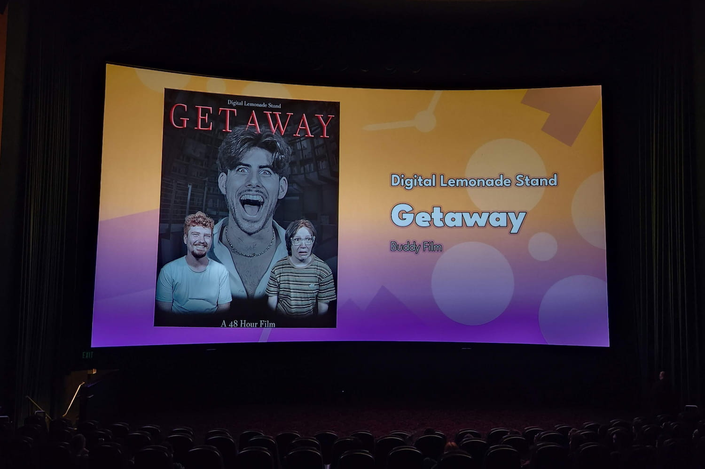

<!DOCTYPE html>
<html lang="en">
  <head>
    <meta charset="UTF-8" />
    <meta name="viewport" content="width=device-width, initial-scale=1.0" />
    <title>Nataniel Farzan | Index: 3</title>
    <meta name="description" content="Entry 3 of Nataniel's blog." />
    <link rel="stylesheet" type="text/css" href="../../assets/css/style.css" />
    <link rel="icon" type="image/png" href="../../assets/images/nf.png" />
  </head>
</html>

<body>
  <main>
    <section class="blog post">
      <h1>GETAWAY: San Diego 48 Hour Film Project</h1>
      <h4>Aug. 14, 2024</h4>

      <p>
        This marks my second year competing in the
        <a href="https://www.48hourfilm.com/sandiego" target="_blank"
          >San Diego 48 Hour Film Project</a
        >
        with team "Digital Lemonade Stand." The competition took place the
        weekend of July 12<sup>th</sup> - 14<sup>th</sup>. I was the Key Grip
        and Drone Operator for our production of
        <i><a href="https://youtu.be/yaRC_c88i8g" target="_blank">GETAWAY</a></i
        >, a buddy film about two friends who stay at an oddly inexpensive
        vacation rental before discovering that the owner of the property is not
        who he seems. Our team was led by director
        <a href="https://www.youtube.com/@drewfilm" target="_blank"
          >Drew Floyd</a
        >, with a combination of both new and returning cast and crew. This
        year,
        <a href="https://www.youtube.com/@peterrobin3286" target="_blank"
          >Peter Majourau</a
        >
        created a
        <a href="https://youtu.be/A0c5Ohc91_g" target="_blank"
          >behind the scenes video</a
        >
        that documents the production of the film.
      </p>

      <section class="portfolio">
        
      </section>

      <p>
        Last week, I was among the cast and crew that got to watch our film
        premiere at a local movie theater. The competition was fierce this year,
        but I am proud to say that our team earned 3<sup>rd</sup>
        place in the audience choice awards for our screening group! I'm already
        looking forward to next year's competition.
      </p>
    </section>
  </main>
</body>
